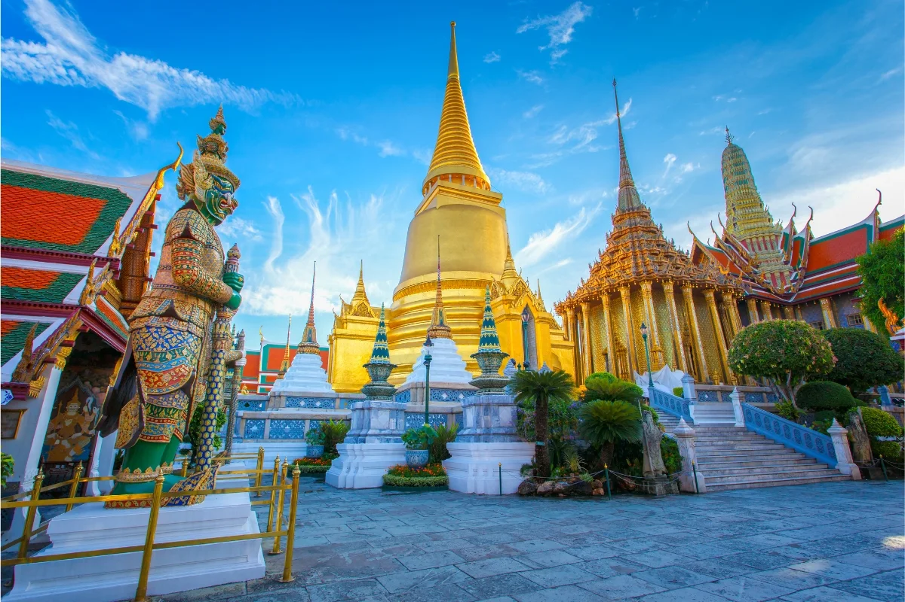
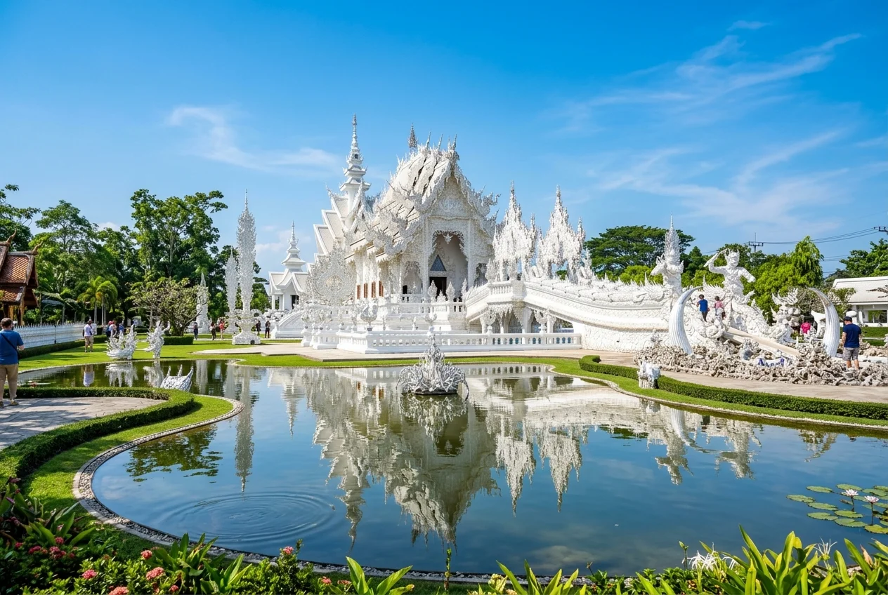
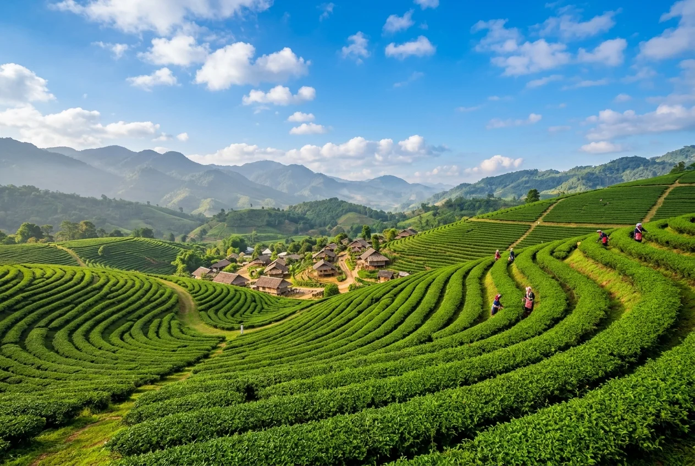
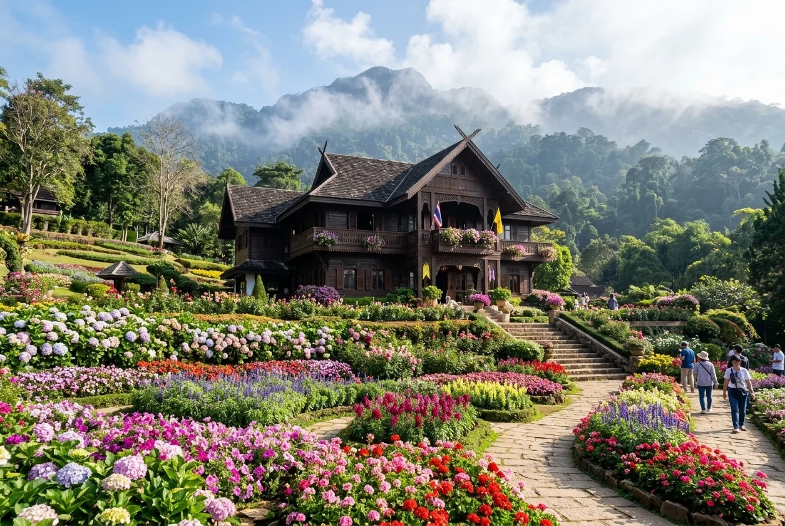

Explore Chiang Rai Packages
Handcrafted itineraries & tropical escapes in Chiang Rai
Chiang Rai Tour Packages
Handcrafted itineraries for an unforgettable vacation

🔥 PopularElegant Chiang Rai Cultural Retreat
Uncover the artistic charm and cultural heritage of Chiang Rai as you explore iconic temples, scenic parks, unique cafés, and vibrant local markets in Northern Thailand.
Enchanting Northern Heritage Journey
Discover the timeless beauty of Northern Thailand as you explore ancient temples, the legendary Golden Triangle, lush mountain landscapes, ethical wildlife experiences, and authentic cultural traditions across Chiang Rai and Chiang Mai.
Exquisite Chiang Rai Nature Escape
Experience the perfect blend of art, nature, and culture in Chiang Rai as you explore iconic temples, lush gardens, scenic waterfalls, royal heritage, and authentic local experiences.
Splendid Northern Thailand Trail
Journey through the cultural gems of Chiang Rai and Chiang Mai, where magnificent temples, scenic landscapes, ethical wildlife experiences, and authentic local traditions create an unforgettable Northern Thailand escape.
Vibrant Northern Thailand & Bangkok Escape
Experience the best of Northern Thailand and Bangkok as you explore iconic temples, scenic landscapes, exciting wildlife attractions, and the vibrant charm of Thailand's capital.
Explore More Chiang Rai Packages
Looking for a personalized Chiang Rai trip? Get in touch with our travel specialists to craft a custom itinerary tailored to your preferences, schedule, and budget.
Sightseeing Options in Chiang Rai
Discover top Chiang Rai sightseeing tours, sacred temples, hill tribe visits & memorable things to do

🔥 Top TourChiang Rai Full-Day Temples & Hot Spring Experience
Highlights: White Temple (Wat Rong Khun) • Blue Temple • Mae Kachan Hot Springs • Lalitta Café • Wat Huai Pha Kiang

🍵 Cultural ImmersionChiang Rai One-Day Hill Tribe & Cultural Tour
Highlights: Lisu, Akha & Lahu Villages • Hands-On Bamboo Cooking • Tea Plantation • Waterfall • Hot Spring

🌸 Royal HeritageWat Phra That Doi Tung & Royal Villa Tour
Highlights: Sacred Mountaintop Stupas • Doi Tung Royal Villa • Alpine Mae Fah Luang Gardens • Borderland Panoramas
EXPLORE MORE OPTIONS OF SIGHTSEEING OF CHIANG RAI
Discover more sightseeing experiences, Golden Triangle boat trips, tea plantation tours and mountain treks in Chiang Rai.
Frequently Asked Questions About Chiang Rai Tours
Quick facts on temple tours, day trips from Chiang Mai, hill tribes, and transfers
What are the must-see sightseeing attractions in Chiang Rai?
Top highlights include the world-famous White Temple (Wat Rong Khun), the vivid Blue Temple (Wat Rong Suea Ten), Mae Kachan Hot Springs, the mountaintop Wat Phra That Doi Tung & Royal Villa, Choui Fong Tea Plantation, and traditional hill tribe villages.
Can I visit Chiang Rai as a day trip from Chiang Mai?
Yes! Our full-day Chiang Rai Temples & Hot Spring Experience offers round-trip transfers directly from Chiang Mai hotels and central meet-up points, departing around 07:00 AM and returning by evening.
What is the dress code for Chiang Rai temples?
Respectful attire covering both shoulders and knees is strictly required at Wat Rong Khun, Wat Rong Suea Ten, and Doi Tung Royal Villa. Slip-on shoes are recommended as footwear must be removed before entering shrines.
Are meals and entrance fees included in sightseeing tours?
Yes, our guided full-day tours include admission fees to all scheduled attractions, professional licensed guides, round-trip transport, and authentic local lunch (such as the bamboo cooking lunch on the Hill Tribe tour).
Plan Your Trip to Chiang Rai
Get in touch with our Thailand travel experts for customized holiday packages